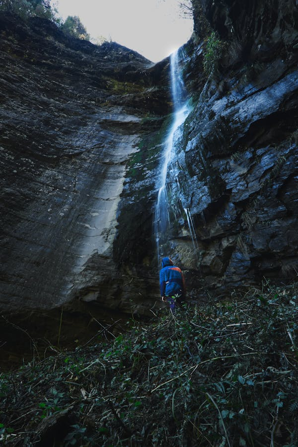
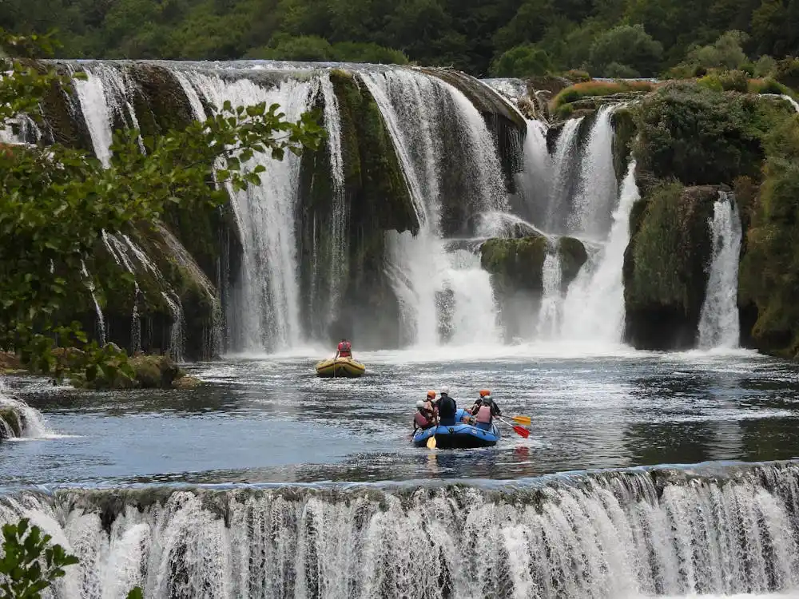
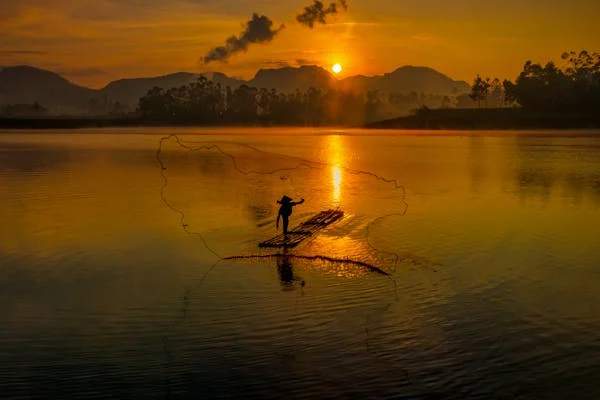

Trips
Contact Us



Your trip begins immediately with a quarter-mile long series of waves, obstacles, and complicated maneuvers. This fast start culminates with a jolting ride through Class IV+ Chamberlain Falls rapid--a careening bend in the river followed by a commanding, sheer drop. Welcome to the first two minutes of every North Fork trip! The Class IV whitewater keeps coming, challenging your paddling skills with each rapid.Midway through the trip, we break for a satisfying lunch. Here you'll have time to really take in the magnificence of the North Fork canyon--sheer, narrow, stunning. Back to the whitewater, you'll slice through long, complicated Staircase rapid.
Just downstream from put-in, Class IV Willows rapid starts your day off with a bang! From here the whitewater is ceaseless--each corner twirls into a new rapid and each new vista reveals another tumultuous chute. It is hard to imagine having any more rapids packed into this relentless run. After Upper and Lower Slicky, we stop for a riverside lunch. But your whitewater adventure is hardly over, you still have several rapids to tackle before we take-out in Lake Kaweah. The itinerary above may be altered due to a range of variables, including river flow levels, time of year, and other factors. During periods of high water we sometimes run a morning to early afternoon trip or late morning to late afternoon trip.
Your trip begins like a bullet with Class IV+ Bloomer Falls, The Maze, and Lewis Creek Falls coming in a rapid succession. The canyon walls constrict tightly as we descend into this National Wild & Scenic River canyon. As the morning ends, we break for lunch just before one of the most challenging Class V sections of the river. Last Chance and Freight Train rapids serve as a vivid reminder of the power of this awesome run. The final part of the day is spent on the lower section, where the river mellows some and allows for moments of relaxation and reflection.
As with any trip on Goodwin, it starts off fast and furious...two exciting Class III rapids a few seconds from put-in and a mandatory scout of Mr. Toad's Wild Ride before plunging down this impressive drop which leaves guest and guide with an overdose of adrenaline in the deep clear pool below! Once we catch our breath again we experience several narrow, fun shoots through willows and sculpted boulders that lead to a surprising eight-foot vertical waterfall called Matterhorn that requires a short, fast portage. More fun twists and turns through Upper Pinball and Lower Pinball Rapids lead abruptly to the always intimidating Haunted House Rapid that drops seven feet into a truck-size boulder! If all this sounds too exciting, take heart, there are soothing calms spread throughout the run that allow you to relax and enjoy the fantastic scenery around you and above you.
Your trip begins with easy Class II rapids, the perfect warm-up for the Class III whitewater that waits downstream. Before we get to the big stuff, we break for a delicious riverside lunch. After lunch, we're back in the rafts, paddling the Class III whitewater of the "Gorge". Our Class III challenge begins with Fowler's Rock Rapid and culminates with rapids like Hospital Bar and Recovery Room. Any trip through the rapid-filled "Gorge" is an eventful one! Reaching Folsom Lake in the late afternoon, we float to our take-out. At night you’ll relax camping at Camp Lotus along the South Fork of the American River and enjoy a freshly prepared meal.
Your trip begins quickly in the Class IV boulder slalom of Rock Garden Rapid. The next four miles bring an onslaught of technical, intricate Class IV+ rapids with large hydraulics and immense boulders. Soon you'll reach Class IV+ Clavey Falls, a legendary rapid due to its sheer drop and intimidating hydraulics. After Clavey, the water mellows to an enjoyable Class II-III level, giving you an opportunity to look beyond the whitewater in front of you and take in the grace and beauty of the Tuolumne canyon. We'll stop for a delicious, well-earned riverside lunch on a relaxing beach. Back on the water, soon you'll be crashing and careening through more Class IV whitewater. Just when you're getting tired, we'll pull into take-out.
| BEGINNER | ||||
|---|---|---|---|---|
| Travel Location | Typical Season | Meet Place | Minimum Age | Per-Person Rate |
| North Fork Stanislaus | April - October | Lotus, CA | 8 years | $135 |
| Kaweah River | May - September | Foresthill, CA | 12 years | $180 |
| California Salmon River | April - September | Groveland, CA | 13 years | $200 |
| INTERMEDIATE | ||||
|---|---|---|---|---|
| Travel Location | Typical Season | Meet Place | Minimum Age | Per-Person Rate |
| Goodwin Canyon / Stanislaus River | October | Knights Ferry, CA | 15 years | $250 |
| South Fork American River | April - May | Lotus, CA | 15 years | $240 |
| Tuolumne River | April - June | Midpines, CA | 12 years | $230 |
| ADVANCED | ||||
|---|---|---|---|---|
| Travel Location | Typical Season | Meet Place | Minimum Age | Per-Person Rate |
| Tuolumne / Cherry Creek Combo Trips | July - September | Groveland, CA | 17 years | $1000 |
| Merced River | April - June | Somes Bar, CA | 15 years | $400 |
| North Fork American River | April - June | Three Rivers, CA | 15 years | $400 |